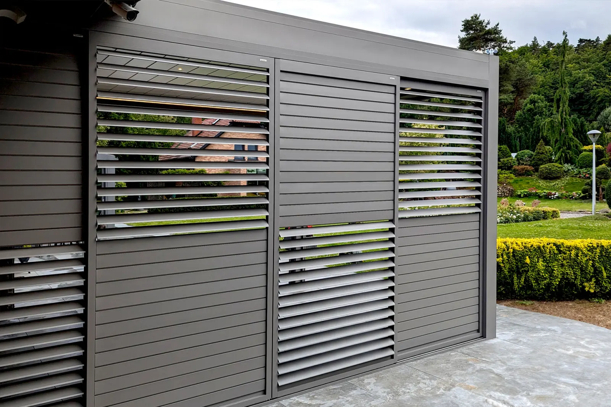

Aluminijski klizni paneli s okretnim lamelama za terase, balkone i lođe te kao bočna stijena pergole. Štite od sunca i vjetra, a prostoru daju privatnost.
Grilje su klizni aluminijski paneli čije se lamele zakreću, pa sami određujete koliko svjetla i privatnosti želite. Odlično rade kao bočna stijena pergole, na terasi, balkonu ili lođi.

Osnovni tehnički podaci grilja.
Grilje na pergolama, terasama, balkonima i fasadama.